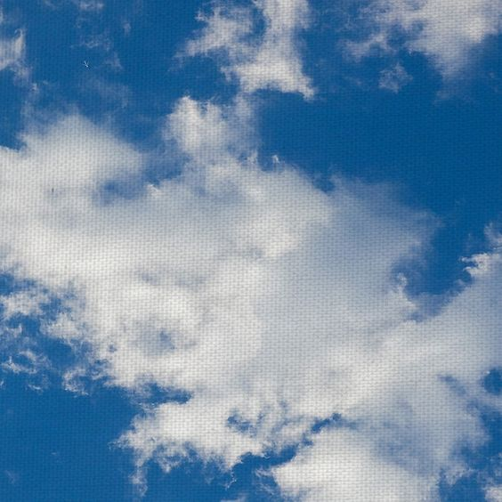

“All Watched Over by Machines
of Loving Grace”
I like to think (and
the sooner the better!)
of a cybernetic meadow
where mammals and computers
live together in mutually
programming harmony
like pure water
touching clear sky.
I like to think
(right now please!)
of a cybernetic forest
filled with pines and electronics
where deer stroll peacefully
past computers
as if they were flowers
with spinning blossoms.
I like to think
(it has to be!)
of a cybernetic ecology
where we are free of our labors
and joined back to nature,
returned to our mammal
brothers and sisters,
and all watched over
by machines of loving grace.

...